Ireland diamond cancels on stamps of Great Britain
Note: on my website many of the
pictures can not be seen! They are of course present in the
catalogue;
contact me if you want to purchase it.
Actually, the stamps of Ireland fall outside the scope of this catalogue, since it only lists stamps from 1840 to 1920. I'll will only list the first issues of this country.
Example:
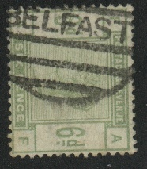
Ireland diamond cancels on stamps of Great Britain
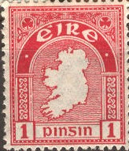

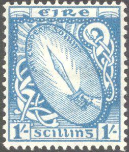
1/2 p green (sword) 1 p red (map) 1 1/2 p red (map) 2 p green (map) 2 1/2 p brown (arms) 3 p blue (cross) 4 p green (arms) 5 p violet (sword) 6 p lilac (sword) 8 p red (sword, 1948?) 9 p violet (arms) 10 p brown (cross) 11 p red (cross, 1948?) 1 S blue (sword)
(Later issues; 1941 overprint)
2 p green 3 p blue 9 p violet
2 p brown
'1922' in thin figures
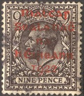
1/2 p green 1 p red 2 1/2 p blue (overprint black or red) 3 p violet 4 p green (overprint black or red) 5 p brown 9 p black (overprint black or red) 10 p blue 2 Sh 6 p brown 5 Sh red 10 Sh blue '1922.' in thick figures (with '.')
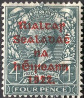
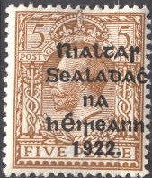
1/2 p green 1 p red 1 1/2 p brown 2 p orange 2 1/2 p blue 3 p violet 4 p green 5 p brown 6 p violet 9 p black 9 p green 10 p blue 1 Sh brown
Forged inverted overprint
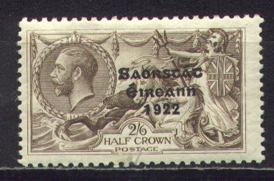
1/2 p green 1 p red 1 1/2 p brown 2 p orange 2 1/2 p blue 3 p lilac 4 p green 5 p brown 6 p lilac 9 p green 10 p blue 1 Sh brown 2 Sh 6 p brown 5 Sh red 10 Sh blue
Forged overprints exist, here some inverted and sidewards forged overprints:
1/2 p green 1 p red 1 1/2 p red 2 p green 3 p blue 5 p violet 6 p brown 8 p orange 10 p lilac 1 Sh green
Fiscal stamps were issued much earlier than postal stamps in Ireland. Some examples:
LAND COMMISSION:
(Land Commission)
"CHANCERY COURT IRELAND FEE FUND"
Chancery Court stamps of Great Britain, with "IRELAND FEE
FUND" overprint in red. 24 values were overprinted in this
manner, ranging from 3 p to 5 Pounds (all in violet)
"PETTY SESSIONS":
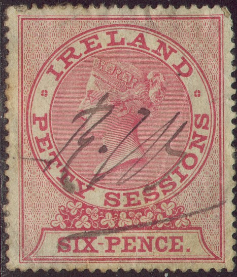
(6 p red Queen Victoria and 6 p green "FOR DOG LICENCE"
overprint)
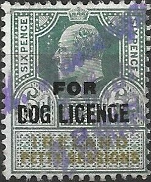
6 p green King Edward VII with "FOR DOG LICENCE"
overprint and 6 p red, King George V and "FOR DOG
LICENCE" overprint. Also a 1 Sh green King George V with
"PETTY SESSIONS NORTHERN IRELAND" and "FOR DOG
LICENCE" overprint.
"COUNTY COURTS":
(Queen Victoria, I've also seen a 3 p in the same design; same
colours)
(King Edward VII)
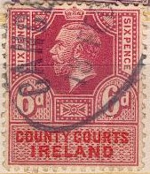
Dog license:
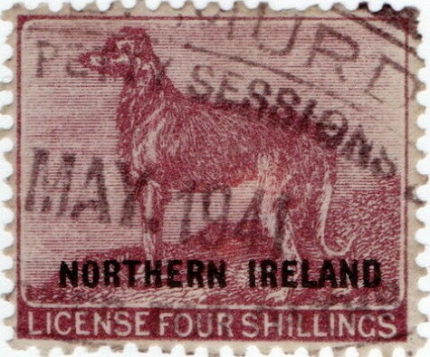
1865: Dog license, no country name, picture of a dog and text
"LICENSE TWO SHILLINGS" violet and 4 sh lilac. Also
with "NORTHERN IRELAND" overprint
This bogus issue for Ireland with the image of Queen Victoria, was apparently made by the same forger who made the following forgeries of Antigua:
{kind=link}
{kind=link}
{kind=link}
{kind=link}